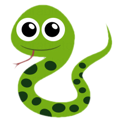
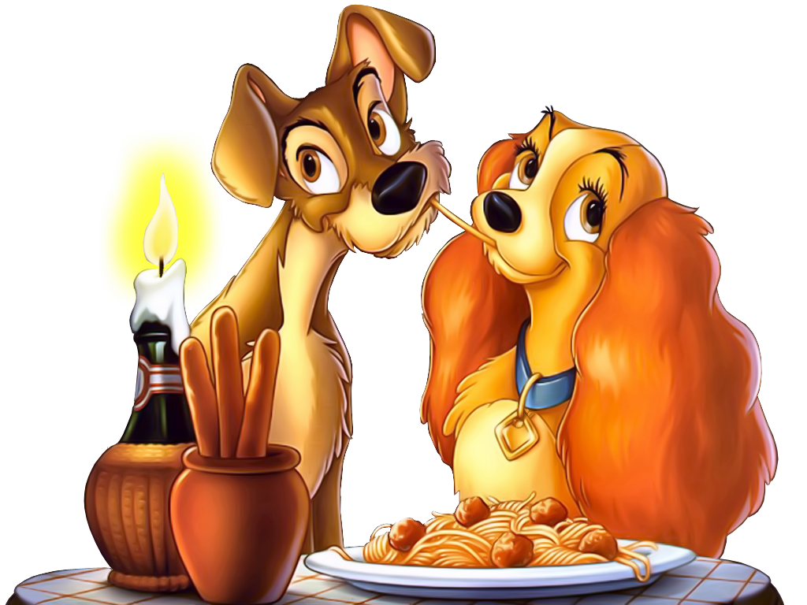

Favorite CMSC Subject so far..
My favorite CMSC subject is CMSC 22 because I like object-oriented programming and its how most games I play were made. My little background in game development made the subject easier for me to understand. In the latter exercises of that subject, we were tasked to implement a game with GUI and that was delightfully unforgettable.
Favorite GE so far..
As I'm only a sophomore student with no GEs this academic year, there's only 2 GEs I fully experienced and my favorite is Ethics mainly because the professor had a pleasant way of teaching it (not reliant on resource reading). His discussions, activities, and assessments were fun and meaningful thus I learned many insights that imrpoved my decision-making in life.
Favorite Programming Language so far..
From my fondness of object-oriented programming, my favoite programming language so far is Python. In addition, it's by far the most beginner-friendly language I encountered and it made my journey to the world of programming easier.
Favorite Food
The Sweet-Sarap Jollibee Spaghetti with French Fries~